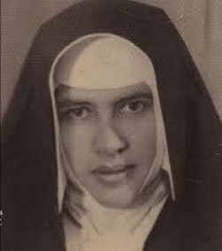
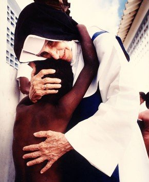
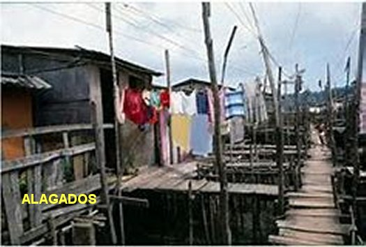
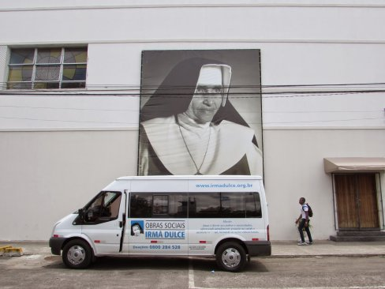
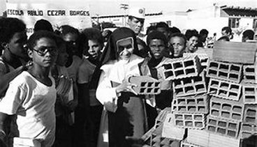
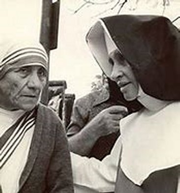

“DECIDIDA A LUTAR CONTRA A POBREZA!
NO ANO QUE REGRESSOU A SALVADOR
Durante três meses, ela serviu
como Enfermeira no Sanatório Espanhol. Ali fazia um pouco de tudo. Atendeu a
porta, o telefone, ajudou na limpeza do Hospital, 
Por outro lado, sempre com aquela
vontade de ajudar os necessitados, depois das aulas no Colégio, ela saía com a
senhora Florentina, irmã do Padre Pároco da Penha, para visitar e auxiliar os
moradores de uns barracos e casebres em Massaranduba. Sempre ela estava com a
firme intenção de amparar aquelas pobres pessoas de algum modo. Pouco tempo depois,
juntou-se a elas um caridoso estudante de Medicina. Os três com muita atenção davam
assistência a cada família em sua casa. Quando as pessoas visitadas não tinham
nenhum recurso: nem casa, nem remédios e nem alimentação, elas eram recolhidas
numa casa velha. Naquela região de muita pobreza, durante o dia Irmã Dulce
oferecia o Curso Primário às crianças, e a noite, alfabetizava os pais e as mães
que trabalhavam nas Fábricas de Massaranduba. E por uma razão muito natural, as
Fábricas e os Barracões de trabalho em Massaranduba passaram a olhar a Irmã
Dulce com muito carinho e respeito. 
A LUTA CONTINUAVA EM TODAS AS FRENTES
Da mesma maneira, incansavelmente Irmã Dulce oferecia os seus serviços no Posto Médico, instalado na Oficina Baiana de Navegação. E assim, sempre evangelizando e levando o amor de DEUS a todos os corações, nas oportunidades convidava os seus alunos a dar uma esticadela até a Igreja do Bonfim e rezar para NOSSO SENHOR. Também com a ajuda dos Padres Redentoristas, fazia campanha para a entronização do SAGRADO CORAÇÃO DE JESUS em todas as Fábricas que visitava, e também, nas casas de famílias. E sempre ia descobrindo novos caminhos de atuação, e assim, no dia 6 de Dezembro de 1935, inaugurou uma Biblioteca para os Operários da Fábrica da Penha.
BAIRRO DOS ALAGADOS

Nesta mesma época, três operários de uma Fábrica resolveram fincar estacas no mangue, e sobre elas lançaram um madeiramento e ergueram os seus barracos de madeira, muito frágeis, que se equilibravam sobre a maré calma coberta de fezes e garrafas plásticas, que desembocava no mar da Bahia de Todos os Santos, ao norte de Salvador. Suportando o cheiro terrível de esgotos, famílias inteiras com crianças, se organizavam naquela triste região. Nascia assim o Bairro dos Alagados em Massaranduba, um Bairro construído pelo povo, que se transformou numa área com as maiores palafitas do Brasil, chegando a abrigar cerca de 100 mil pessoas. Foi nesse ambiente que a Irmã Dulce, de maneira corajosa enraizou os seus trabalhos de Assistência Social aos pobres e aqueles que necessitavam, a partir de 1935. Ela cuidava dos doentes com a ajuda do estudante de Medicina Bernadino Nogueira. Os remédios eram adquiridos por meio de doações das pessoas ou pela caridade das Farmácias. Durante a semana, a Irmã Dulce com sua sanfona, animava o almoço dos operários das Fábricas e lhes ensinava o Catecismo. Ali havia muitos problemas de saúde: verminose, diarréia, infecções respiratórias, etc. Tudo por causa da falta de higiene e da alimentação inadequada. Em 1950 começou o aterro de toda aquela região. Foi uma providência necessária realizada pelo Governo Baiano. Assim, uma boa parte dos moradores conseguiu viver em casas de alvenaria, construída pelo Governo em terra firme. Mas uma parte das palafitas ainda continuou existindo.
TRABALHO COM OS OPERÁRIOS

Em 1936 a Irmã Dulce, numa oportunidade, encontrou-se com o seu grande amigo Franciscano Frei Hildebrando, que conhecera em 1930, que foi o seu Diretor Espiritual e um dos responsáveis por ela ter sido aceita no Convento do Carmo, em Sergipe. Ambos, unindo as forças, convocaram os operários de Salvador e fundaram a UNIÃO OPERÁRIA . Mas depois, em Janeiro de 1937, a União foi transformada em CIRCULO OPERÁRIO DA BAHIA, aderindo ao movimento nacional dos Círculos Operários, seguindo as normas do COB (Círculo Operário Brasileiro), que se iniciou no Estado do Rio Grande do Sul.
O COB oferecia acesso aos trabalhadores a
muitas atividades educacionais, culturais e recreativas. Por isso 
É fato comprovado que em muitas famílias, existem pessoas que não são corretas e praticam ações ilícitas. Mas está comprovado também que existem dentro de famílias erradas, membros que são responsáveis, zelosos pelo seu caráter além de revelarem um precioso e autêntico espírito cristão. Este é ocaso específico do Engenheiro Norberto Odebrecht.
COLÉGIO EM MASSARANDUBA
Mas naquela região de Massaranduba, onde havia as palafitas e que foi quase que totalmente aterrada, havia necessidade de ter um Colégio, a fim de atender os filhos dos operários sócios da “COB Baiana”, considerando que eles precisavam também de estudar. Irmã Dulce foi atrás dos poderes públicos com tanta persistência, que em Maio de 1939 foi inaugurado o primeiro Colégio Público da Região de Massaranduba.
CINEMA EM MASSARANDUBA
Em 1940, Frei Hildebrando, Irmã Dulce e o jovem engenheiro Norberto Odebrecht, conseguiram levantar um bom dinheiro e construíram o “Cinema Roma”, para proporcionar distração as famílias. Desde então aquele jovem engenheiro católico, verdadeiro cristão entusiasmado e membro da família Odebrecht, colaborou efetivamente como religioso fiel, nas obras da Irmã Dulce, e inclusive, ajudou efetivamente na construção do HOSPITAL DE SANTO ANTONIO em 1983.
O Cinema foi aproveitado não só para passar bons filmes, mas também para proporcionar diversão aos trabalhadores em geral. Os filmes exibidos eram “fitas para família” : comédias, aventuras, faroeste, filmes de piratas e filmes católicos. Mas também, além de filmes havia apresentações da “Jovem Guarda”, assim como apresentações de grupos teatrais com enredo educativo e familiar.
CENTRO EDUCACIONAL SANTO ANTONIO
Em 1964 o Governador da Bahia, Senhor Lomanto Junior doou um precioso terreno a Irmã Dulce e lá, com a ajuda financeira do povo, foi criado o CENTRO EDUCACIONAL SANTO ANTONIO, que até hoje serve como centro para instrução e auxílio para pessoas idosas. Esta, é outra obra preciosa da Irmã Dulce, que trouxe muitos benefícios a quem não teria chance de alcançá-lo, em face da sua imensa pobreza. No inicio o CENTRO recebia crianças e idosos. Mas com o passar dos anos, as crianças com sua vivacidade natural e os diversos tipos de brincadeiras, começou a incomodar os idosos. As Irmãs que administravam a Organização avisaram a Irmã Dulce. Juntas, elas decidiram separar os idosos das crianças. Os idosos continuaram no mesmo local, e para as crianças ela arranjou o terreno de um português que tinha um barracão. Foi uma situação provisória, mas que resolveu o problema no CENTRO.
Com sua permanente busca de um local melhor, tempos depois, com o auxílio da Fundação Fulbright, comprou um terreno que se limitava com uma área da Marinha do Brasil, inclusive tinha uma parte alagada. Com autorização da Marinha, e com o auxílio da própria Marinha e do Exército, aterrou toda a área e construiu um belo Centro de Recuperação de Menores Abandonados. Ali permaneceu por três anos, até 1964, quando recebeu um presente maior. O Governador do Estado Lomanto Junior, doou a Irmã uma Fazenda em Simões Filho, local a 21 quilometro de Salvador. Tratava-se de um antigo Núcleo Agrícola do Estado, que se encontrava abandonado. Ali nasceu em plenitude o CENTRO EDUCACIONAL SANTO ANTONIO para os menores, o qual, em 1979 foi ampliado graças a Campanha do Ano Internacional da Criança, promovida pela Rede Globo de Televisão.

IRMÃ DULCE ENCONTROU-SE COM DOIS SANTOS
Em 1979, a Freira Albanesa Santa Teresa de Calcutá foi visitar Salvador e mais especificamente o Bairro de Alagados, e se encontrou com a Irmã Dulce, neste famoso Bairro de palafitas, onde a Irmã iniciou sua grande obra de caridade.
O PAPA JOÃO PAULO II fez quatro viagens ao Brasil. Na sua primeira viagem em 30 de Junho de 1980, visitou Salvador e se encontrou com a Irmã Dulce. O povo aplaudiu calorosamente. Dessa visita nasceu a canção: “A bênção João de DEUS”. Também o Papa visitou Irmã Dulce na sua última viagem.
O SEU LAZER – SUAS ORAÇÕES
Nos seus raros momentos de lazer, a Irmã Dulce gostava de modo preferencial de ler a vida dos Santos, em especial, a Vida de Santa Terezinha do Menino Jesus (Santa Terezinha de Lisieux). Como ela mesma dizia, “quando me sentia exausta, realizava outros serviços que me cançavam menos”.
Segundo algumas Freiras que conviveram com ela em tempos diferentes da vida da Irmã, era muito raro que ela dormisse sem que tivesse rezado o Rosário ao longo do dia. E durante o dia rezava interiormente, e à noite, rezava em seu leito. Contava sempre com a ajuda de Santo Antonio, seu amigo e protetor de longos anos. A Eucaristia era o alimento que lhe dava a força diária para cumprir todas as missões ordenadas pelo seu coração.